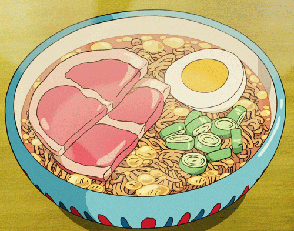

Ponyo's Ham Ramen

Description
An instant ham ramen recipe from the Studio Ghibli
film, Ponyo.
Difficulty: Very easy
Time: 3 mins
Servings: 3
Ingredients
- 1 package Nissin Chicken Ramen
- 400ml boiling water
- 1 slice cooked ham (cut in half)
- 1/2 hard boiled egg
- chopped green onion
Steps
- Boil the water.
- Place the noodles in a ramen bowl. Pour boiling water
over the noodles and cover. Set and start your timer
for three minutes
- After the first minute, quickly open, shake the
noodles to separate, then arrange the ham, egg, and
green onion over the noodles.
- Cover again and waituntil the timer beeps.
Return to top
Back